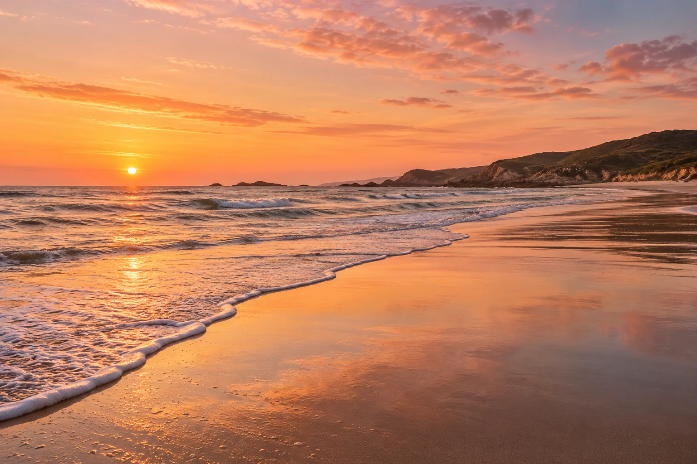
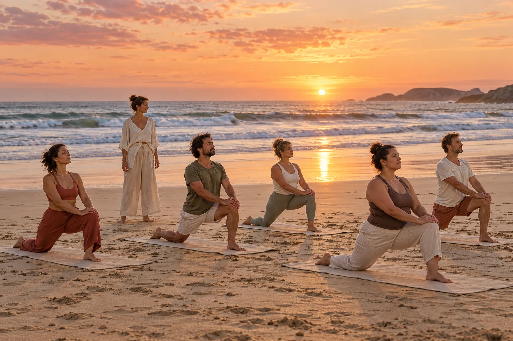
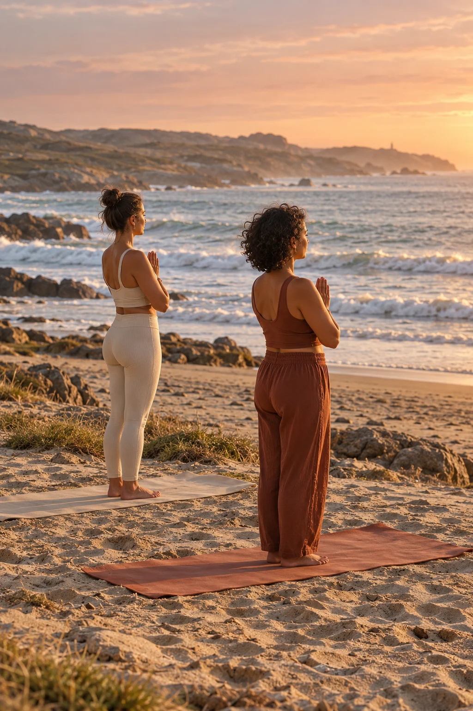
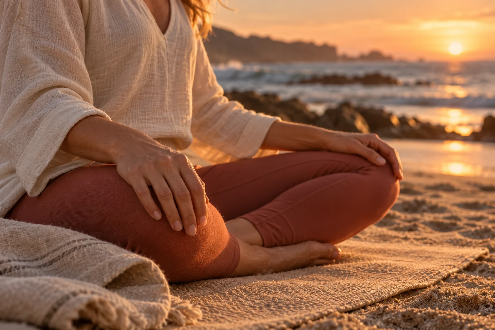
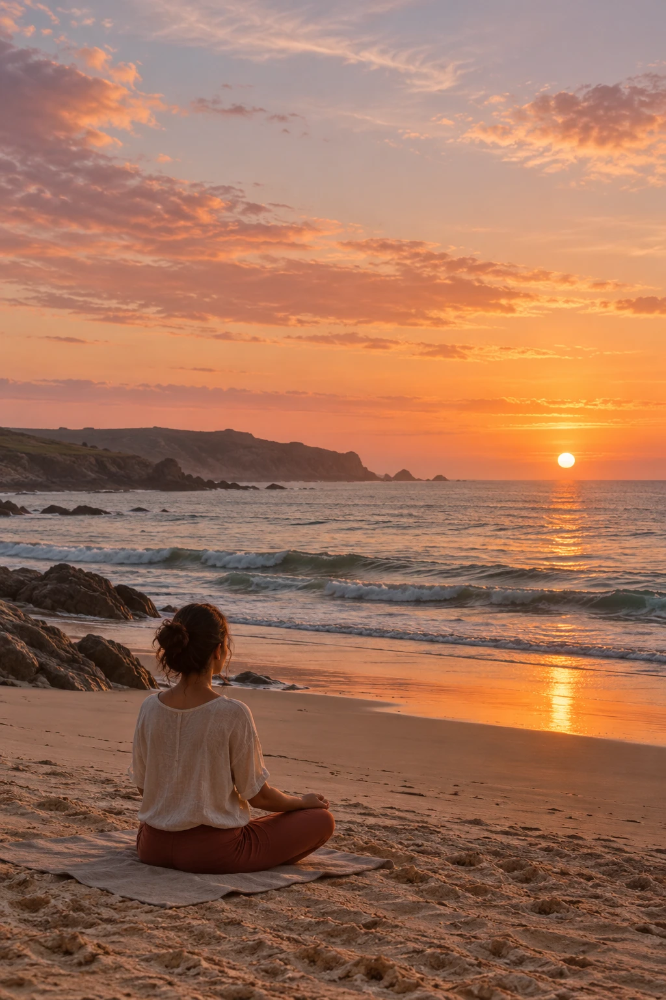
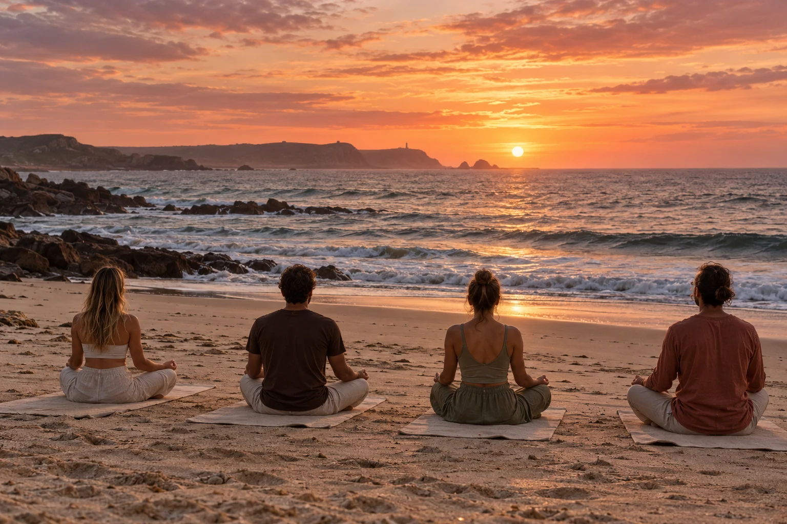

Llegar y soltar
Deja el día atrás. Siente la arena y encuentra tu lugar frente al mar.

FISTERRA · COSTA DA MORTE
Yoga al atardecer. Los pies en la arena.
El Atlántico delante. Nada más que este momento.
Sin prisa. Sin exigencias. A tu ritmo.
01 / LA EXPERIENCIA
MENOS RUIDO.
MÁS PRESENTE.
Hay un instante en el que el sol baja, el mar cambia de color y todo parece ir un poco más despacio.
Serea nace de ese instante. Una invitación a moverte con calma, respirar con el océano y regalarte un final de día diferente en la Costa da Morte.
Así se vive una sesión ↗Deja el día atrás. Siente la arena y encuentra tu lugar frente al mar.
Una práctica de yoga suave, con espacio para escuchar tu propio ritmo.
Una pausa de quietud para contemplar cómo el día se despide del océano.
02 / EL ÁLBUM SEREA
El mar al fondo. La luz en la piel.
Y ese momento en el que no necesitas
estar en ningún otro lugar.





6 imágenes.
LA ESENCIA SEREA
Una esterilla. El sonido de las olas. La luz sobre la piel. Creemos en una forma de practicar sin comparaciones y en una naturaleza que merece todo nuestro respeto.
No hace falta tocarte los pies ni saber meditar. Puedes venir tal y como estás.
El mar pone el paisaje.03 / NUESTRO HORIZONTE
La Costa da Morte tiene una energía propia.
Exploramos sus playas con calma y elegimos
el encuentro según las condiciones del día.
FISTERRA, A CORUÑA
Mar de Fóra mira al mar abierto; Langosteira dibuja un largo arenal junto al monte. Dos caras de Fisterra para volver a mirar el paisaje con otros ojos.
El punto de encuentro y el horario se acuerdan por WhatsApp. La elección de playa depende del viento, las mareas y las condiciones de uso del entorno.
Explorar Fisterra ↗✳ Dejamos solo huellas en la arena. Respetamos los accesos, las dunas y la vida de la costa.
Hay días que piden hacer más.
Y otros que piden sentir más.
04 / TU PRÓXIMO ATARDECER
Cuéntanos cuándo te gustaría venir. Seguimos la conversación por WhatsApp para acordar los detalles de tu sesión.
ANTES DE VENIR
Sí. La propuesta es una práctica suave, abierta también a quienes empiezan. Cuéntanos tu experiencia al consultar y confirmaremos si la sesión encaja contigo.
Ropa cómoda, agua y una capa de abrigo para el final del día. Al confirmar la sesión te indicaremos qué material llevar y si hay esterillas disponibles.
El tiempo manda en el Atlántico. Si las condiciones no acompañan, acordaremos contigo una alternativa o un cambio de fecha antes de la sesión.
El horario se adapta al atardecer y la fecha elegida. Consulta por WhatsApp y recibirás la duración, el precio y todas las condiciones antes de confirmar.
Puedes consultarlo en el formulario seleccionando el número de personas. Cuéntanos tu idea y revisaremos las opciones y la disponibilidad.
Cuando acordemos contigo por WhatsApp la disponibilidad, el precio, el punto de encuentro y las condiciones. Enviar el formulario es solo el primer paso.
Nos vemos donde el sol
se encuentra con el mar.